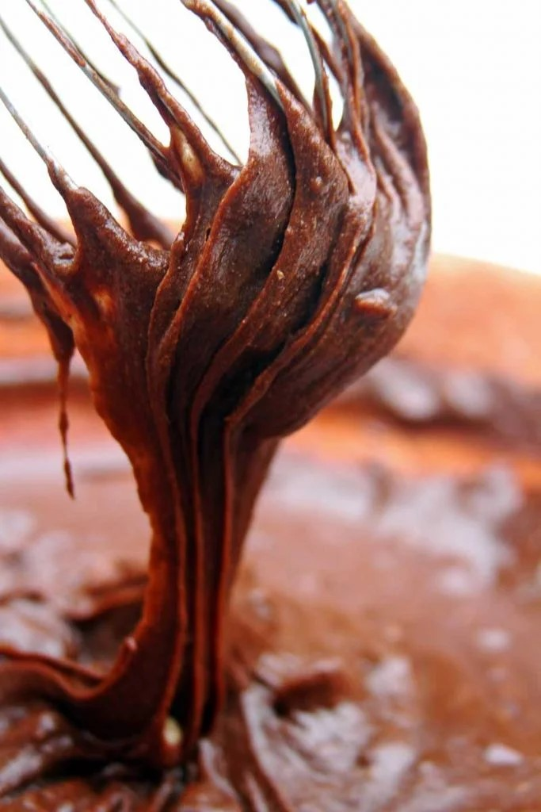

INGREDIENTES SECOS
3/4 xícara de farinha de trigo sarraceno/mourisco (105 gramas)
1/2 xícara de cacau em pó 100 % (45 gramas)
2/3 xícara de polvilho doce (80 gramas)
1 colher de chá rasa de goma xantana
1/4 colher de chá de bicarbonato de sódio
Pitada de sal
1/3 xícara de castanha picadas (50 gramas opcional)
INGREDIENTES MOLHADOS
3/4 xícara de melado (240 gramas)
1/2 xícara de água (120 ml)
1/2 xícara de óleo de coco derretido (120 ml)
1 colher de chá de essência de baunilha (5 ml – opcional)
Preaqueça o forno a 250ºC e unte uma forma pequena com um pouco de óleo, eu usei uma forma de 20 x 20 centímetros.
Em uma bacia misture os secos formando um mix de farinhas.
Em outra bacia misture os ingredientes molhados.
Adicione os secos sobre os molhados aos poucos, até que forme uma massa homogênea, grossa e elástica.

Leve para assar em forno aquecido a 250º C por 10-12 minutos, 15 minutos no máximo. Faça o teste apertando a superfície gentilmente com o dedo, você deve sentir que a superfície está sequinha e o interior ainda mole.
Deixe esfriar para depois servir.
Substitua a farinha de trigo sarraceno por farinha de arroz integral.
Substitua o polvilho doce por araruta.
Meça corretamente a quantidade de goma xantana para não alterar a textura final do brownie, use sempre uma colher de medida nivelada.
Você pode substituir o bicarbonato de sódio por 1 colher de chá de fermento em pó, mas com o bicarbonato o brownie vegano fica mais escuro.
Você pode substituir as castanhas pela oleaginosa da sua preferência ou até mesmo gotas de chocolate.
Você pode substituir o melado por mel, agave ou use 1 xícara de açúcar mascavo. Lembre-se apenas que o mel não é vegano.
Se o melado estiver muito grosso use água quente para dissolver com mais facilidade.
Se estiver usando açúcar mascavo corrija a quantidade de água para 3/4 xícara.
Você pode substituir o óleo de coco por qualquer outro óleo neutro da sua preferência, porém a receita fica mais molenga com óleo comum.
https://youtu.be/_OPC-KZXV0M
Fat: 11 gramas
Calories: 239 calories
Saturated Fat: 6,3 gramas
Unsaturated Fat: 3,7 gramas
Sodium: 2%
Fiber: 8%
Cholesterol: 0%
Carbohydrate: 12%
Sugar: 11,7 gramas
Serving Size: 16
Trans Fat: 0%
Protein: 4%